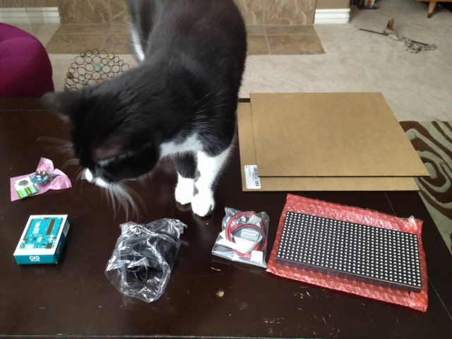
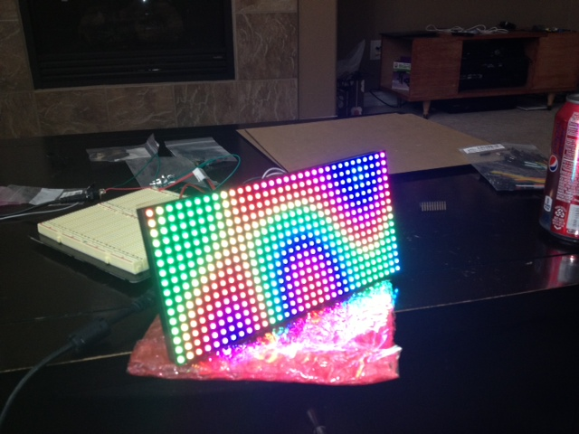

First, the finished prototype for those who just want the goods!
My brother-in-law is a mathematician and programmer, so while thinking of a good gift to give him for Christmas I decided to build him a Arduino-based clock that would a) look really slick and b) incorporate Conway's Game of Life, since I know a lot of "math" people dig it.
I found a few "game of life" clocks, including one featured on Hackaday not too long ago (http://hackaday.com/2013/10/19/game-of-life-clock/), but I didn't really like the way it operated. For one thing, I wanted a bigger playing field, and also with that particular one the time is only visible for a few seconds every minute. I wanted my device to be functional as an actual clock as well! I did like the idea of using the time each minute as the starting field for Game however.
I decided on a Arduino UNO as my microprocessor, a Chronodot RTC module for accurate time keeping, and a 16x32 RGB LED Matrix, and a few acrylic sheets to make a case for it. I got all the parts in, and got to work!
Here are the parts, receiving their official inspection:

And after wiring up, here is a test:

And a demo video after some coding, demostrating the functionality:
Basically every minute, the clock clears the display, shows the time for a couple of seconds, and then populates a game of life board with the same pixels as the current time and starts playing. The time always stays visible behind the game, although portions of it may be covered depending on the current life board.
The programming was a little tricky on this. Initially I had some large 2 dimensional arrays of bytes to represent the pixels of the clock, the fonts, the game of life board, and a second game of life board to do the next generation in, but once I started using all of that I quickly ran into the RAM limit on the arduino, and things started failing hard. Once I figured that out, I had to find a new way to encode the data. Each "digit" had a field of 6x10 pixels. The way I was storing it, as an array of bytes 6x10 I was using 480 bytes for each digit, or 4800 bytes for the total set of 0-9. Similarly I was using an array of bits to keep the entire "time" field, so an array of 16 x 32 bytes, or 4096 bytes. Add in another 2 of those for the game of life playing boards and I was using way too much memory.
I started with the fonts -- since I was not using the font itself to store information about color or anything, I really only needed a single bit for each of the 60 pixels in the allocated array (currently taking 480 bytes of info, so a lot of waste!). I decided to pack all the information into a 64 bit data type and then do some bit math to extract the data. I wrote a small python program to let me design my numerals in the array, and then pack them into a uint64_t data type, which is essentially just an unsigned 64 bit integer field available on the arduino.
So something like this:
num[8] = [
[1,1,1,1,1,1],
[1,1,1,1,1,1],
[1,1,0,0,1,1],
[1,1,0,0,1,1],
[0,1,1,1,1,0],
[0,1,1,1,1,0],
[1,1,1,1,1,1],
[1,1,0,0,1,1],
[1,1,0,0,1,1],
[1,1,1,1,1,1],
which is my 8 gets turned into this:
1152867867424669695LL
This took my entire memory usage for the numerals 0-9 down from 4800 bytes to 80, quite the savings. Of course I could no longer directly index my array to locate the proper pixels and had to to lots of bit shifting and comparisons to get the data back out, but what are processors good for if not math!
Similarly for the playing fields I packed each row (32 pixels wide) into 32 bit data type, and then each "board" becomes an array of 10 columns x 32bits, so down from 4096 bytes to 40.
After getting this all worked out it was just a matter of figuring out the RTC module and making the clock part work. The display is SUPER bright and hard to look at directly, but with a piece of acrylic in front of it diffusing and dampening the light a bit it looks really nice.
With the four remaining pins left over on my arduino I am adding some buttons, and then working on designing the case next. For additional functionality I added the following:
Directly modify the brightness while the clock was running
Ability to modify the UTC offset
Ability to change the speed at which the life generations compute
Switch between 12 and 24 hour display modes
Switch between wrapping at the edge and using that as a hard stop for the game
Modify the color of the clock and the game
To design the case, I used http://makercase.com. I really like this site, but it does seem a bit buggy. I've used several different browsers on it, and always find some little oddities -- the case continually moving down the screen, clicks not working properly, etc. Also this is the first time I used the T-Slot method for joining, and it did not work out for me. I don't know if it was me, the website or what, but the slots that are supposed to hold the nuts are WAY too big. I ended up using contact cement to glue it shut. I did bring out a programming header on the side, so the clock can be reprogrammed (even more important since it is fully glued instead of screwed together). I used solid black acrylic for everything except the front, which is a translucent gray acrylic. This has the very nice effect of diffusing and dampening the light from the matrix, which even on the lowest setting is very very bright.
Anyways, I gave the clock to my brother-in-law and he loved it! I'm going to build another for myself (and correct the case issues) because I grew very fond of it during the month it sat around my house in various stages of construction.
- MatthewS's blog
- Log in or register to post comments


4 comments
Looks good! Bumped your post
Looks good! Bumped your post to the SYN Shop front page :)
Any word on source?
Just went back to the HackADay article on your clock, and I saw that you mentioned you might post source code for the project. I am very interested in building one.
Source
Any chance on getting the source for this? I've had the panel for a week or so, and this looks like a perfect use for it.
Clock of Life
Very nice project. Can you are able to share the code and Circuit diagram.
gur001@yahoo.com
Thanks.